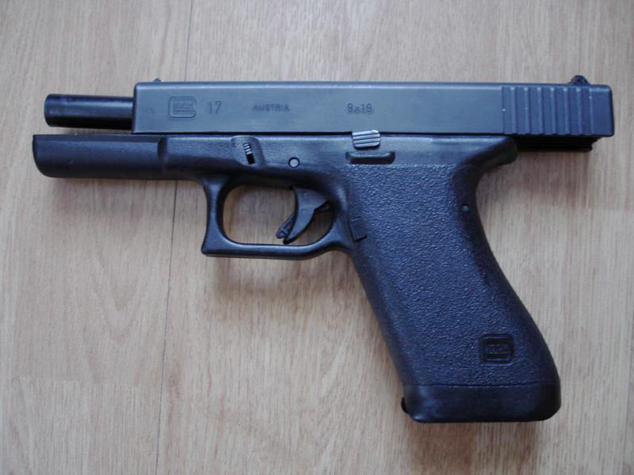
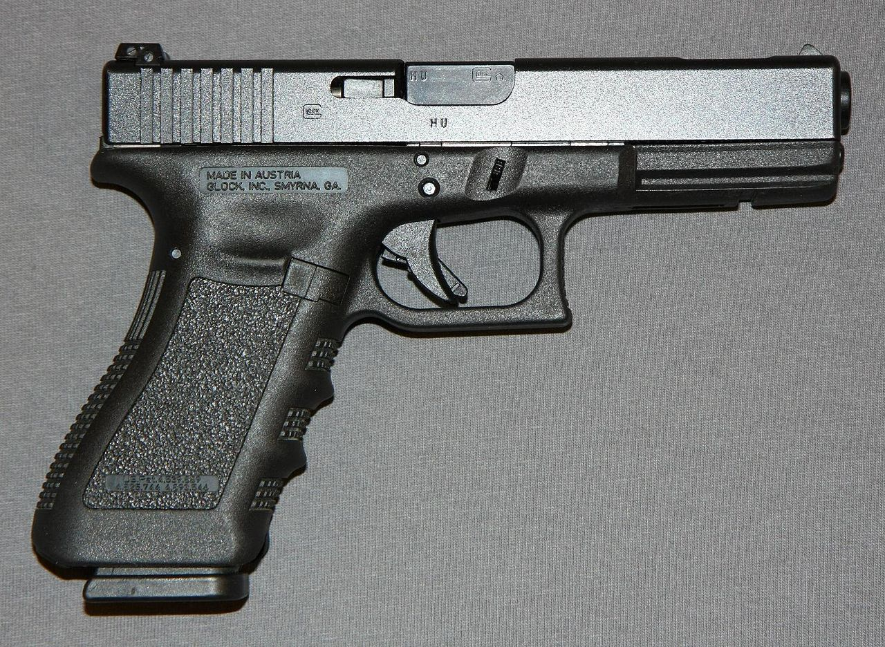

History
The company's founder, head engineer Gaston Glock, had no experience with firearms design or manufacture
at the time their first pistol, the Glock 17, was being prototyped. Glock had extensive experience in
advanced synthetic polymers, which was instrumental in the company's design of the first commercially
successful line of pistols with a polymer frame. Glock introduced ferritic nitrocarburizing into the
firearms industry as an anticorrosion surface treatment for metal gun parts.

History
In 1980, the Austrian Armed Forces announced that it would seek tenders for a new, modern duty pistol to
replace their World War II–era Walther P38 handguns. The Austrian Ministry of Defence formulated a
list of 17 criteria for the new generation service pistol, including requirements that it would be self
loading; fire the NATO-standard 9×19 mm Parabellum round; the magazines were not to require any means of
assistance for loading; be secure against accidental discharge from shock, strike, and drop from a
height of 2 m onto a steel plate. After firing 15,000 rounds of standard ammunition, the pistol was
to be inspected for wear. The pistol was to then be used to fire an overpressure test cartridge
generating 5,000 bar (500 MPa; 73,000 psi).[dubious – discuss] The normal maximum operating pressure
(Pmax) for the 9mm NATO is 2,520 bar (252 MPa; 36,500 psi).
Glock became aware of the Austrian Army's planned procurement, and in 1982 assembled a team of Europe's
leading handgun experts from military, police, and civilian sport-shooting circles to define the most
desirable characteristics in a combat pistol. Within three months, Glock developed a working
prototype that combined proven mechanisms and traits from previous pistol designs. In addition the
plan was to make extensive use of synthetic materials and modern manufacturing technologies, to make it
a very cost-effective candidate.
Several samples of the 9×19mm Glock 17 (so named because it was the 17th patent procured by the
company) were submitted for assessment trials in early 1982, and after passing all of the exhaustive
endurance and abuse tests, the Glock emerged as the winner.
The handgun was adopted into service with the Austrian military and police forces in 1982 as the P80
(Pistole 80), with an initial order for 25,000 guns. The Glock 17 outperformed eight different
pistols from five other established manufacturers (Heckler & Koch of Germany offered their P7M8, P7M13,
and P9S, SIG Sauer of Switzerland bid with their P220 and P226 models, Beretta of Italy submitted their
model 92SB-F, FN Herstal proposed an updated variant of the Browning Hi-Power, and the home-grown Steyr
Mannlicher entered the competition with the GB).
The results of the Austrian trials sparked a wave of interest in Western Europe and overseas,
particularly in the United States, where a similar effort to select a service-wide replacement for the
M1911 had been going on since the late 1970s (known as the Joint Service Small Arms Program). In late
1983, the United States Department of Defense inquired about the Glock pistol and received four samples
of the Glock 17 for unofficial evaluation. Glock was then invited to participate in the XM9 Personal
Defense Pistol Trials, but declined because the DOD specifications would require extensive retooling of
production equipment and providing 35 test samples in an unrealistic time frame.
After joint Norwegian and Swedish trials in 1983–1985, in 1985 the Glock 17 was accepted into service as
the P80 with the Norwegian and in 1988 as the Pistol 88 with the Swedish armed forces, surpassing all
prior NATO durability standards. As a result, the Glock 17 became a standard NATO-classified
sidearm and was granted a NATO Stock Number (1005-25-133-6775). By 1992, some 350,000 pistols had
been sold in more than 45 countries, including 250,000 in the United States alone.
Starting in 2013 the British Army began replacing the Browning Hi-Power pistol with the Glock 17 Gen 4,
due to concerns about weight and the external safety of the Hi-Power. The French Armed Forces (FAF)
in 2020 began replacing their MAC Mle 1950 and to a lesser extent their PAMAS G1 pistols with Glock 17
Gen 5 models specifically made for the FAF. The French preferred the Glock 17 Gen 5 over the HS2000
and CZ P-10 offerings that also made it to the final selection phase.

A stripped lower receiver, one that is lacking the additional parts included in a completed lower
receiver,
is
the only part of an AR-15 style rifle that needs to be transferred through a federally licensed firearms
dealer
under United States federal law.
The lower receiver is the serial-numbered part legally defined as the firearm under United States law.
However,
this definition is currently questionable due to a 2019 court ruling that the AR-15 lower receiver does
not
match the legal definition in 27 CFR § 479.11. A completed lower receiver is visually distinguished by
the
trigger guard ahead of the detachable pistol grip, and behind the magazine well capable of holding
detachable
magazines. The lower receiver holds the trigger assembly including the hammer, and is the attachment
point
for
the buttstock. The lower receiver is attached to the upper receiver by two removable pins. Disassembly
for
cleaning or repair of malfunctions often requires the removal of these pins. Removal of the rear
take-down
pin
allows the receiver to be opened by rotation around the forward pivot pin as a hinge.